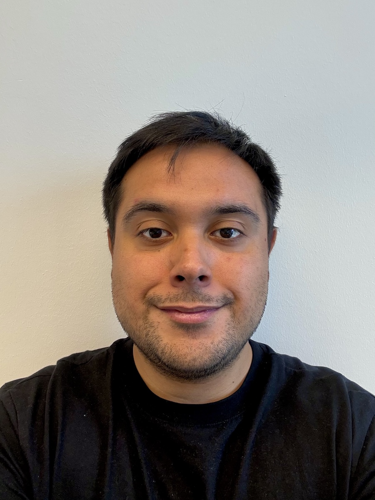

Javier Castro

PhD student in Mathematics at Technische Universität Berlin.
My research lies at the interface between scientific machine learning and the numerical analysis of PDEs. I develop mathematically principled neural network methods for nonlinear PDEs, including thermodynamically informed neural networks and weak-residual formulations.
Research interests
In particular, I study how underlying stochastic particle systems can inform the design of structure-preserving loss functionals. As a complementary direction, I study curvature-aware optimization methods for the training of these methods, including Gauss-Newton and natural-gradient methods. A further line of my work concerns the continuous-time weak approximation of stochastic gradient dynamics, and weak approximation methods for SDEs.
Education
Technische Universität Berlin
PhD in Mathematics, member of the ERC project FluCo
Berlin, Germany · 2022–2027
Advisor: Prof. Benjamin Gess. Expected completion: March 2027.
Universidad de Chile
MSc in Applied Mathematics
Santiago, Chile · 2020–2022
Advisor: Prof. Claudio Muñoz. Thesis: Description of local and nonlocal equations using Deep Learning techniques.
Publications
Javier Castro, Claudio Muñoz, Nicolás Valenzuela. The Calderón’s Problem via DeepONets. Vietnam Journal of Mathematics, 52, 775–806, 2024. DOI.
Javier Castro. The Kolmogorov Infinite Dimensional Equation in a Hilbert Space via Deep Learning Methods. Journal of Mathematical Analysis and Applications, 527(2), Article 127413, 2023. DOI.
Javier Castro. Deep Learning Schemes for Parabolic Nonlocal Integro-Differential Equations. Partial Differential Equations and Applications, 3, Article 77, 2022. DOI.
Preprints
- Javier Castro, Benjamin Gess. THINNs: Thermodynamically Informed Neural Networks. arXiv preprint, 2025. arXiv.
Selected talks
THINNs: Thermodynamically Informed Neural Networks
SIAM Conference on Optimization, Edinburgh, United Kingdom · 2026
The Calderón’s Problem via DeepONets
PDE Seminar, Universidad de Chile, Santiago, Chile · 2023
The Kolmogorov Infinite Dimensional Equation via Deep Learning Methods
Jornadas Matemáticas de la Zona Sur, Universidad de Los Lagos, Chile · 2022
Deep Learning Schemes for Parabolic Nonlocal Integro-Differential Equations
Jornadas Matemáticas de la Zona Sur, Universidad de La Frontera, Chile · 2021
Selected posters
THINNs: Thermodynamically Informed Neural Networks
Foundations of Computational Mathematics (FoCM), Vienna, Austria · 2026
THINNs: Thermodynamically Informed Neural Networks
Mathematics of Machine Learning, Hamburg University of Technology, Hamburg, Germany · 2025
Awards
Jorge Billeke Award for Academic Excellence in Mathematics · 2023
Chilean Mathematical Society (SOMACHI) — National distinction for outstanding academic achievement in Mathematics and Mathematical Engineering, awarded for my Master’s thesis.